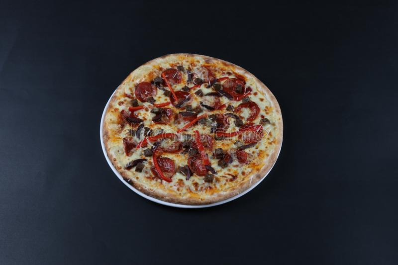

Пи́цца (итал. pizza) — традиционное итальянское блюдо в виде тонкой круглой лепёшки (пирога[1]) из дрожжевого[1] теста, выпекаемой с уложенной сверху начинкой из томатного соуса[2], кусочков сыра, мяса, овощей, грибов[2] и других продуктов[3].
История
Основная статья: История пиццы
